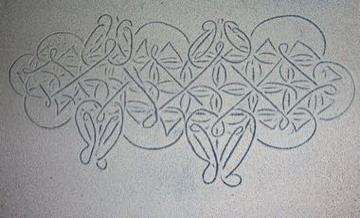
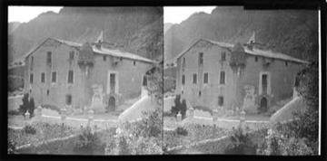
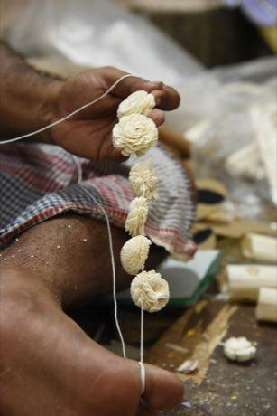
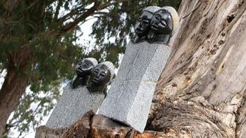
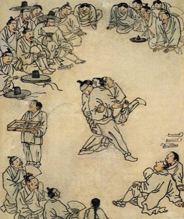
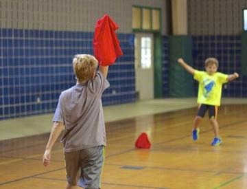
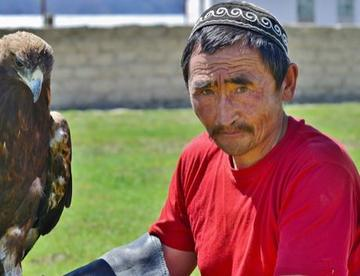
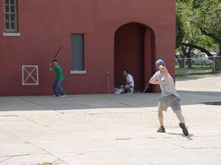
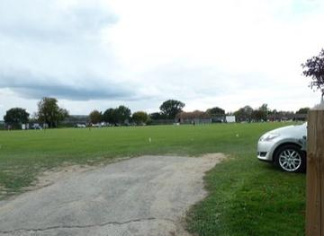
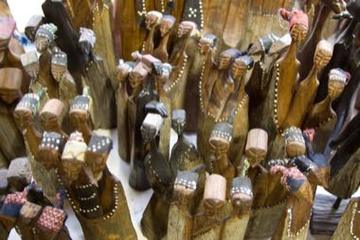

Sack Race
Indonesia +1 · Racing
Sadu Bedouin ground-loom weaving
Jordan · Crafts and making
Sahel Salt Caravan
Niger +1 · Sports with animal partners
Sáhkku
Worldwide · Board and table games
Sailor's Knotwork and Turk's Head
Worldwide · Crafts and makingSamoan cricket
Samoa · Street and playground games
Sand drawing
Vanuatu · Puzzles and mind games
Sangaku Geometry Puzzles
Japan · Puzzles and mind games
Santoor
India · Musical instruments
Santur Hammer Strings
Iran +3 · Musical instruments
São Tomé cocoa and chocolate maker
Sao Tome and Principe · Crafts and makingSapo
Peru +2 · Dexterity and skill games
Sasando
Indonesia · Musical instruments
Sashiko Stitch Patterns
Japan · Crafts and making
Saung gauk
Myanmar · Musical instrumentsSavika
Madagascar · Street and playground games
Saz / Bağlama
Turkey · Musical instrumentsScarf-ball toss
Cambodia · Street and playground gamesScopa
Italy +1 · Card games
Seal carving
China · Crafts and makingSeed throwing
Cambodia · Dexterity and skill gamesSeed war
Costa Rica · Street and playground gamesSeega
Egypt · Board and table gamesSenet
Egypt · Board and table gamesSenterej
Ethiopia +1 · Board and table gamesSepak takraw
Indonesia +3 · Street and playground games
Seven-Key Cabinet Puzzle
Andorra · Performance and storytellingSeven-pebble toss game
Cameroon · Dexterity and skill games
Shakuhachi
Japan · Musical instrumentsShashki
Ukraine +2 · Board and table gamesShashki / chess
Uzbekistan · Board and table gamesShatranj / chess
Tajikistan · Board and table gamesShax
Djibouti +1 · Board and table games
Shepherd's Leap
Worldwide · Puzzles and mind gamesShibam Mud-Brick Tower Builder
Yemen · Crafts and making
Shibori Indigo Fold
Japan +1 · Crafts and making
Shikara paddle race
India · RacingShisima
Kenya · Board and table games
Shital pati cool mat weaving
Bangladesh · Crafts and making
Sho
China · Board and table gamesShogi
Japan · Board and table games
Sholapith flower carving
Bangladesh · Crafts and making
Sholo Guti
Bangladesh · Board and table games
Shona stone sculpture carving
Zimbabwe · Crafts and making
Shophouse facade builder
Singapore +2 · Crafts and making
Shove ha'penny
United Kingdom · Dexterity and skill games
Sicilian Cart Painting
Italy · Crafts and making
Sicilian Puppet Knights
Italy · Performance and storytelling
Sierra Leone Country Cloth Strip Loom
Sierra Leone · Crafts and makingSig
Mauritania · Board and table gamesSija
Chad · Board and table games
Silambam
India · Wrestling and martial sportsSilat Melayu
Brunei · Street and playground gamesSipa
Philippines · Street and playground games
Sittuyin
Myanmar · Board and table games
Sjoelen
Netherlands · Dexterity and skill games
Skijoring
Worldwide · Sports with animal partnersSkittles
United Kingdom +2 · Street and playground games
Skrabalai
Lithuania · Musical instrumentsSlam dominoes
Barbados · Board and table games
Sled dog race
United States +1 · RacingSlovene quintain
Slovenia · Street and playground games
Slutsk Sash Weaving
Belarus · Crafts and makingSnakes and Ladders
India · Board and table gamesSnooker
United Kingdom · Street and playground gamesSolomon string figures
Solomon Islands · Dexterity and skill games
Songket
Malaysia +2 · Crafts and makingSongo
Cameroon +3 · Board and table games
Spelling Bee
United States · Other traditionsSpinning top
Dominican Republic +5 · Dexterity and skill games
Sprouts
United Kingdom · Crafts and making
Square dance caller
United States · Puzzles and mind games
Sri Lankan batik wax-resist painting
Sri Lanka · Crafts and making
Ssireum
South Korea · Wrestling and martial sports
Stamp Designer and Perforator
Liechtenstein · Crafts and making
Steal the Flag
Italy +2 · Other traditionsSteel-and-stick
Turkey · Street and playground games
Steelpan
Trinidad and Tobago · Musical instruments
Steppe eagle hunting
Kazakhstan · Dexterity and skill gamesStick and Cingel
Albania · Street and playground gamesStick game
Maldives +1 · Street and playground games
Stickball
Cuba · Bat-and-ball games
Stilt fishing
Sri Lanka · Dexterity and skill games
Stilt-village builder
Brunei +1 · Crafts and making
Stone Arch Bridge Builder
China · Puzzles and mind gamesStone put
Bhutan +1 · Dexterity and skill games
Stone Skipping
Worldwide · Puzzles and mind games
Stoolball
United Kingdom · Archery, throwing and target gamesStreet
Saint Vincent and the Grenadines +1 · Dexterity and skill gamesStreet baseball
Dominican Republic · Street and playground gamesStreet games
Bahamas · Dexterity and skill gamesStreet play games
Trinidad and Tobago · Dexterity and skill gamesSugar-cane spear throwing
Fiji · Street and playground games
Sumo bout
Japan · Wrestling and martial sportsSungka
Philippines · Board and table games
Suzani embroidery
Uzbekistan +1 · Crafts and making
Suzhou silk embroidery
China · Crafts and makingSvaika
Russia · Street and playground games
Swahili carved door
Kenya · Crafts and making
Swazi carved figures and craft market
Eswatini · Crafts and making
Swiss wrestling
Switzerland · Wrestling and martial sportsSyrian mancala
Syria · Board and table games